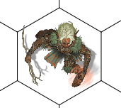

Objeto SceneViewport
Objeto SceneViewport
O Objeto Viewport representa a tela do usuário, a janela de exibição, onde o scene está sendo renderizado.
O Viewport de um scene pode ser obtido através da propriedade "viewport" do objeto Scene
Herança
O objeto SceneViewport herda de SceneBaseObject e possui também todas as suas características.
Características
Além das características herdadas, o objeto SceneViewport também possui as seguintes características:
Propriedades e atributos
| Propriedade | Tipo | Descrição |
|---|---|---|
| scene | Objeto Scene | (Somente Leitura) Contém o Objeto Scene que este Viewport renderiza. |
| width | Double | (Somente Leitura) Contem a LARGURA em Métrica de Tela do viewport, isto é, da janela onde o scene está sendo renderizado. |
| height | Double | (Somente Leitura) Contem a ALTURA em Métrica de Tela do viewport, isto é, da janela onde o scene está sendo renderizado. |
| worldX | Double | Define, em Métrica de Mundo, em qual posição do eixo X do mundo o ponto (X: 0, Y: 0) da tela aponta. As propriedades "worldX" e "worldY" servem para fazer "scroll" no scene. Se quiser fazer um scroll para a direita, por exemplo, incrementa-se o valor de worldX. Se quiser fazer um scroll para cima, decrementa-se o valor de worldY; Este é um valor local e não é compartilhado com os outros usuários que estão visualizando o mesmo scene. |
| worldY | Double | Define, em Métrica de Mundo, em qual posição do eixo Y do mundo o ponto (X: 0, Y: 0) da tela aponta. As propriedades "worldX" e "worldY" servem para fazer "scroll" no scene. Se quiser fazer um scroll para a direita, por exemplo, incrementa-se o valor de worldX. Se quiser fazer um scroll para cima, decrementa-se o valor de worldY; Este é um valor local e não é compartilhado com os outros usuários que estão visualizando o mesmo scene. |
| scale | Double | Define a escala entre a Métrica do Mundo e a Métrica da Tela do Scene. Em outras palavras, esta propriedade controla o "zoom" do Scene. Exemplo: Um valor 32.0 significa que cada unidade métrica do mundo ocupam 32 unidades métricas de tela. Se quiser, por exemplo, efetuar um zoom+ no scene, incrementa-se "scale". Se quiser reduzir o zoom pela metade, divide-se por dois o valor de "scale". Este é um valor local e não é compartilhado com os outros usuários que estão visualizando o mesmo scene. |
| cursor | Enumerado: "default" "arrow" "handPoint" "hourGlass" "IBeam" "size" "sizeNESW" "sizeNS" "sizeNWSE" "sizeWE" "upArrow" "drag" "noDrop" "hSplit" "vSplit" "multiDrag" "sqlWait" "no" "appStart" "help" "cross" | Define qual cursor de mouse deve ser apresentado quando o mouse estiver em em cima do viewport do scene. "default" - Cursor padrão, uma seta padrão. "arrow" - Uma seta padrão. "handPoint" - Uma mão com um dedo apontando para cima. Normalmente é usado para identificar um item selecionável/clicável "hourGlass" - Uma ampulheta para indicar um processo em andamento. "IBeam" - Cursor que sinaliza a possibilidade de entrar com texto no controle. "size" - Indicação de possibilidade de redimensionamento. "sizeNESW" - Indicação de possibilidade de redimensionamento no sentido Nordeste-Sudoeste "sizeNS" - Indicação de possibilidade de redimensionamento no sentido Norte-Sul "sizeNWSE" - Indicação de possibilidade de redimensionamento no sentido Noroeste-Sudeste "sizeWE" - Indicação de possibilidade de redimensionamento no sentido Leste-Oeste "upArrow" - Uma seta apontando para cima. "drag" - Um cursor indicando que itens estão sendo arrastados. "noDrop" - Indicação de que não é possível arrastar para este alvo. "hSplit" - Indicação de splitter horizontal "vSplit" - Indicação de splitter vertical. "multiDrag" - Indicação de que vários itens estão sendo arrastados. "sqlWait" - Ampulheta indicando um processo de banco de dados em andamento. "no" - Uma indicação de negação, de que não é possível fazer algo. "appStart" - Combinação de "default" e "hourGlass", normalmente usado para indicar que um aplicativo está sendo aberto. "help" - Uma seta com um ponto de interrogação. "cross" - Um cursor em formato de cruz, usado para indicar um posicionamento preciso. |
Métodos
| Método | Descrição |
|---|---|
| viewport:screenToWorld(screenX, screenY) | Converte uma posição definida em métricas de tela em uma posição definida em métricas de mundo. Em outras palavras, esta função responde a seguinte pergunta: O ponto (screenX, screenY) da tela do usuário representa qual ponto (worldX, worldY) do tabuleiro? Esta conversão leva em consideração o "scroll" e o "zoom" (propriedades worldX, worldY e scale) do Viewport. Parâmetros: screenX - a posição do eixo X do ponto da tela screenY - a posição do eixo Y do ponto da tela Retorno: Esta função retorna 2 valores na seguinte ordem: worldX e worldY contendo o ponto convertido em métricas de mundo. Exemplo de uso: local worldX, worldY = scene.viewport:screenToWorld(10, 50); |
| viewport:screenToWorld(screenRect) | Converte um retângulo definido em métricas de tela em um retângulo definido em métricas de mundo. Em outras palavras, esta função responde a seguinte pergunta: O retângulo "screenRect" da tela do usuário representa qual retângulo do tabuleiro? Esta conversão leva em consideração o "scroll" e o "zoom" (propriedades worldX, worldY e scale) do Viewport. Parâmetros: screenRect - Uma tabela SceneRect contendo o retângulo que será convertido. Retorno: Uma tabela SceneRect contendo o retângulo convertido em métricas de mundo. |
| viewport:worldToScreen(worldX, worldY) | Converte uma posição definida em métricas de mundo em uma posição definida em métricas de tela. Em outras palavras, esta função responde a seguinte pergunta: O ponto (worldX, worldY) do mundo do scene fica em qual posição (screenX, screenY) na tela do usuário? Esta conversão leva em consideração o "scroll" e o "zoom" (propriedades worldX, worldY e scale) do Viewport. Parâmetros: worldX - a posição do eixo X do mundo do scene. worldY - a posição do eixo Y do mundo do scene. Retorno: Esta função retorna 2 valores na seguinte ordem: screenX e screenY contendo o ponto convertido em métricas de tela. Exemplo de uso: local screenX, screenY = scene.viewport:worldToScreen(3, 4.5); |
| viewport:worldToScreen(worldRect) | Converte um retângulo definido em métricas de mundo em um retângulo definido em métricas de tela. Em outras palavras, esta função responde a seguinte pergunta: O retângulo "worldRect" do mundo do scene ocupa qual retângulo da tela do usuário? Esta conversão leva em consideração o "scroll" e o "zoom" (propriedades worldX, worldY e scale) do Viewport. Parâmetros: worldRect - Uma tabela SceneRect contendo o retângulo que será convertido. Retorno: Uma tabela SceneRect contendo o retângulo convertido em métricas de tela. |
| viewport:getScrollBounds() | Retorna os limites de scroll para os valores worldX e worldY. Retorno: Esta função retorna 4 valores numéricos na seguinte ordem e definição: minX - Um número. O scene não deixa a propriedade worldX ficar menor que este valor. minY - Um número. O scene não deixa a propriedade worldY ficar menor que este valor; maxX - Um número. O scene não deixa a propriedade worldX ficar maior que este valor. maxY - Um número. O scene não deixa a propriedade worldY ficar maior que este valor. Exemplo de uso: local minX, minY, maxX, maxY = viewport:getScrollBounds(); |
| viewport:setupToolCategory(name, title, order) | Atualiza ou cria uma categoria de ferramentas no Scene. Parâmetros: name - Uma cadeia de caracteres contendo o nome da categoria. Este nome pode ser referenciado depois pela função addToolButton title - Uma cadeia de caracteres contendo a descrição/título da categoria. order - Um número definindo a ordem da categoria. Esta categoria será exibida depois/abaixo de outra categoria de ordem menor. (A grosso modo, quem tiver número de ordem menor fica na frente) |
| viewport:addToolButton(categoryName, title, iconURL, order, options, callback [, deactivationCallback]) | Adiciona um botão-ferramenta ao Scene. Parâmetros: categoryName - O nome da categoria em que o botão deve ser inserido. Este é o mesmo nome usado na função setupToolCategory. Se for especificado uma categoria inexistente, ela será criada. title - Cadeia de caracteres contendo o título do botão. iconURL - Cadeia de caracteres contendo o endereço/caminho de uma imagem que será utilizada como ícone da ferramenta. Pode ser um endereço de internet (exemplo: “http://xxxx.com.br/a.png”) Pode ser o caminho de um arquivo contido no pacote do plugin. Pode ser um arquivo que se encontra no HD Virtual do plugin instalado. order - Um número contendo a ordem do botão em sua categoria. A grosso modo, quem tiver um número de ordem menor fica na frente. options - nil ou uma tabela LUA podendo conter os seguintes atributos: "selectable" - Booleano, onde true significa que a ferramenta é uma ferramenta selecionável. Uma ferramenta selecionável permanece ativa até que fique "não selecionada". Por padrão, este valor é false e significa que a ferramenta executa algo que não precisa mudar seleção da ferramenta ativa. defaultOfCategory - Booleano onde true significa que esta ferramenta é a padrão da categoria que está e que ela será utilizada quando o usuário clicar na categoria. O padrão é false. dontFocus - Booleano onde true significa que a ferramenta não deve ser focada como ferramenta padrão da categoria após o usuário clicar nela. O padrão é false. DontFocus não funciona se selectable estiver ativo. callback - Uma função que será chamada quando o usuário ativar/clicar esta ferramenta. (OPCIONAL) deactivationCallback - Uma função que será chamada quando esta ferramenta estava selecionada e o usuário selecionou outra. Este callback é chamado apenas se a ferramenta for do tipo "selecionável" e o Scene espera que sua ferramenta pare de fazer o que ela faz quando selecionada. Retorno: Esta função retorna um número identificador do ToolButton no scene. Este mesmo valor pode ser utilizado posteriormente na função removeToolButton. |
| viewport:removeToolButton(toolID) | Remove um botão ferramenta que foi previamente adicionado pela função addToolButton. Parâmetros: toolID - Um número identificador do ToolButton. Este valor é retornado pela função addToolButton. |
| viewport:checkToolButton(toolID[, checked]) | Marca ou desmarca um ToolButton. A marcação é uma mera indicação visual para o usuário entender que o Tool está ativo de alguma forma. Podem existir mais de 1 ToolButton marcados ao mesmo tempo. Parâmetros: toolID - toolID - Um número identificador do ToolButton. Este valor é retornado pela função addToolButton. (OPCIONAL) checked - Um booleano, onde true significa marcar o tool button e false significa desmarcar o tool button. Se não informado, true será utilizado como padrão. |
| viewport:isToolButtonChecked(toolID) | Retorna se um determinado ToolButto está marcado. A marcação é uma mera indicação visual para o usuário entender que o Tool está ativo de alguma forma. Podem existir mais de 1 ToolButton marcados ao mesmo tempo. Parâmetros: toolID - toolID - Um número identificador do ToolButton. Este valor é retornado pela função addToolButton. Retorno: Um Boolean, onde true significa que o toolbutton está marcado. |
| viewport:selectDefaultToolButton() | Seleciona a Ferramenta/Tool Button padrão. Pode existir apenas uma ferramenta selecionada ao mesmo tempo e representa a ferramenta que o usuário está trabalhando no momento. A ferramenta padrão normalmente é a de "selecionar/movimentar" itens do scene. |
| viewport:selectToolButton(toolID) | Seleciona a Ferramenta/Tool Button especificada pelo padrão. Pode existir apenas uma ferramenta selecionada ao mesmo tempo e representa a ferramenta que o usuário está trabalhando no momento. Parâmetros: toolID - toolID - Um número identificador do ToolButton. Este valor é retornado pela função addToolButton. |
| viewport:showForm(form[, options]) | Exibe uma janela na interface do usuário na forma de um Popup flutuante acima do viewport do scene. Parâmetros: form - O formulário a ser exibido na interface. Deve ser um objeto Lua Form já instanciado. (OPCIONAL) options - Uma tabela/objeto LUA contendo as opções da exibição do popup. As opções são: onClose - [function, padrão = nil] - Uma função lua que será invocada quando o popup for fechado. placement - [string enumerado] - Onde o popup será exibido.. Os possíveis valores são: "center" - no centro da tela "bottom" - na parte de baixo da tela "top" - na parte de cima da tela "left" - à esquerda na tela "right" - à direita na tela "topLeft" - no canto superior esquerdo da tela "topRight - no canto superior direito da tela "bottomLeft" - no canto inferior esquerdo da tela "bottomRight" - no canto inferior direito da tela "mouse" - onde o mouse está atualmente "mouseCenter" - centralizado onde o mouse está atualmente. nil ou não informado - Posição personalizada. Retorno: Se conseguir exibir o form como um popup no viewport, retorna true; Senão retorna false. Observações: A função não espera o popup fechar para retornar. Após esta chamada, o código LUA continuará sua execução normal enquanto o form é mostrado. |
| viewport:closeForm(form) | Fecha uma janela popup que foi previamente aberta pela da função viewport:showPopup. Parâmetros: form - O formulário a ser fechado/tirado da interface. Deve ser um objeto Lua Form já instanciado Retorno: Se conseguir fechar o form, retorna true; Senão retorna false. |
| viewport:needRepaint() | Informa ao RRPG que o Scene precisa ser redesenhado. |
{kind=link}
Métodos para renderização
Todos os métodos listados abaixos são válidos APENAS dentro de eventos "onBeforeDraw"s e "OnAfterDraw"s
| Método | Descrição |
|---|---|
| viewport:prepareFill(color) | Prepara o viewport para renderizar o preenchimento de polígonos com uma cor sólida. Parâmetros: color - uma cadeia de caracteres contendo uma cor. Observações: Após chamar este método, os métodos viewport:fill*** utilizarão esta cor no desenho. |
| viewport:prepareDraw(color [, thickness, strokeCap, strokeJoin, strokeDash]) | Prepara o viewport para renderizar o contorno de polígonos com uma cor sólida. Parâmetros: color - uma cadeia de caracteres contendo uma cor. (OPCIONAL) thickness - A espessura do contorno métrica de tela. Se omitido, o valor padrão é 1.0; (OPCIONAL) strokeCap - Define o estilo gráfico usado ao desenhar o fim das linhas. Pode ser "flat" (linhas com pontas retangulares) ou "round" (linhas com pontas arredondadas). Se omitido, o valor padrão é "flat". (OPCIONAL) strokeJoin - Define o estilo gráfico usado ao juntar segmentos de linha em uma forma. Pode ser "miter" (As quinas/junções são "quadradas"), "round" (As quinas/junções são arredondadas) ou "bevel" (As quintas/junções são ligadas de forma diagonal). Se omitido, o valor padrão é "miter" (OPCIONAL) strokeDash - Define o estilo gráfico da linha. Pode ser "solid" (A linha é sólida), "dash" (A linha é tracejada), "dot" (A linha é feita de pontos), "dashDot" (A linha é alternada entre traços e pontos), ou "dashDotDot" (A linha é alternada entre traço, ponto e ponto). Se omitido, o valor padrão é "solid" Observações: Após chamar este método, os métodos viewport:draw*** utilizarão estas configurações. |
| viewport:prepareFont(size [,fontName, bold, italic, underline]) | Prepara o viewport para preencher textos com uma determinada fonte. Parâmetros: size - Um número contendo o tamanho da fonte. Ex: 12 (OPCIONAL) fontName - O nome da fonte a ser usada. Se nil, uma fonte padrão será utilizada. (OPCIONAL) bold - True se desejar que a fonte esteja em negrito. (OPCIONAL) italic - True se desejar que a fonte esteja em itálico. (OPCIONAL) underline - True se desejar que a fonte esteja sublinhada. |
| viewport:fillRect(left, top, right, bottom[, opacity]) | Desenha o preenchimento de um retângulo na tela do scene. Parâmetros: left - Posição esquerda (no eixo X) em métrica de tela de onde o retângulo deve ser preenchido. top - Posição superior (no eixo Y) em métrica de tela de onde o retângulo deve ser preenchido. right - Posição direita (no eixo X) em métrica de tela de onde o retângulo deve ser preenchido. bottom - Posição inferior (no eixo Y) em métrica de tela de onde o retângulo deve ser preenchido. (OPCIONAL) opacity - Um número entre 0.0 e 1.0 definindo a opacidade do desenho, onde 0.0 = totalmente transparente e 1.0 = totalmente opaco. Se este parâmetro não for informado, será utilizado 1.0. Observações: Para definir o material/cor do retângulo, invoque primeiro o método "prepareFill" |
| viewport:fillEllipse(left, top, right, bottom[, opacity]) | Desenha o preenchimento de uma elipse/figura oval na tela do scene. Parâmetros: left - Posição esquerda (no eixo X) em métrica de tela de onde a elipse deve ser preenchida. top - Posição superior (no eixo Y) em métrica de tela de onde a elipse deve ser preenchida. right - Posição direita (no eixo X) em métrica de tela de onde a elipse deve ser preenchida. bottom - Posição inferior (no eixo Y) em métrica de tela de onde a elipse deve ser preenchida. (OPCIONAL) opacity - Um número entre 0.0 e 1.0 definindo a opacidade do desenho, onde 0.0 = totalmente transparente e 1.0 = totalmente opaco. Se este parâmetro não for informado, será utilizado 1.0. Observações: Para definir o material/cor da elipse, invoque primeiro o método "prepareFill" |
| viewport:fillPolygon(polygon[, opacity]) | Desenha o preenchimento de um polígono na tela do scene. Parâmetros: polygon - Um array de tabelas que contém propriedades x e y, e cada cada item do array representando um vértice do polígono. (OPCIONAL) opacity - Um número entre 0.0 e 1.0 definindo a opacidade do desenho, onde 0.0 = totalmente transparente e 1.0 = totalmente opaco. Se este parâmetro não for informado, será utilizado 1.0. Observações: Para definir o material/cor do polígono, invoque primeiro o método "prepareFill" |
| viewport:fillACell(i, j [, opacity]) | Desenha o preenchimento de uma célula do grid do scene. Parâmetros: i - a posição i da célula "Aij" j - a posição j da célula "Aij" (OPCIONAL) opacity - Um número entre 0.0 e 1.0 definindo a opacidade do desenho, onde 0.0 = totalmente transparente e 1.0 = totalmente opaco. Se este parâmetro não for informado, será utilizado 1.0. Observações: Para definir o material/cor do retângulo, invoque primeiro o método "prepareFill" |
| viewport:drawRect(left, top, right, bottom[, opacity]) | Desenha o contorno de um retângulo na tela do scene. Parâmetros: left - Posição esquerda (no eixo X) em métrica de tela de onde o retângulo deve ser preenchido. top - Posição superior (no eixo Y) em métrica de tela de onde o retângulo deve ser preenchido. right - Posição direita (no eixo X) em métrica de tela de onde o retângulo deve ser preenchido. bottom - Posição inferior (no eixo Y) em métrica de tela de onde o retângulo deve ser preenchido. (OPCIONAL) opacity - Um número entre 0.0 e 1.0 definindo a opacidade do desenho, onde 0.0 = totalmente transparente e 1.0 = totalmente opaco. Se este parâmetro não for informado, será utilizado 1.0. Observações: Para definir o material/cor do retângulo, invoque primeiro o método "prepareDraw" |
| viewport:drawEllipse(left, top, right, bottom[, opacity]) | Desenha o contorno de uma elipse/figura oval na tela do scene. Parâmetros: left - Posição esquerda (no eixo X) em métrica de tela de onde a elipse deve ser preenchida. top - Posição superior (no eixo Y) em métrica de tela de onde a elipse deve ser preenchida. right - Posição direita (no eixo X) em métrica de tela de onde a elipse deve ser preenchida. bottom - Posição inferior (no eixo Y) em métrica de tela de onde a elipse deve ser preenchida. (OPCIONAL) opacity - Um número entre 0.0 e 1.0 definindo a opacidade do desenho, onde 0.0 = totalmente transparente e 1.0 = totalmente opaco. Se este parâmetro não for informado, será utilizado 1.0. Observações: Para definir o material/cor da elipse, invoque primeiro o método "prepareDraw" |
| viewport:drawLine(startX, startY, endX, endY [,opacity]) | Desenha uma linha na tela do scene. Parâmetros: startX - Posição no eixo X em métrica de tela de onde a linha deve se originar. startY - Posição no eixo Y em métrica de tela de onde a linha deve se originar. endX - Posição no eixo X em métrica de tela de onde a linha deve finalizar. endY - Posição no eixo X em métrica de tela de onde a linha deve finalizar. (OPCIONAL) opacity - Um número entre 0.0 e 1.0 definindo a opacidade do desenho, onde 0.0 = totalmente transparente e 1.0 = totalmente opaco. Se este parâmetro não for informado, será utilizado 1.0. |
| viewport:textSize(txt) | Calcula o tamanho do texto usando a fonte configurada no viewport. Parâmetros: txt - A cadeia de caracteres que será medida. Retorno: x - A largura do texto em métrica de tela y - A altura do texto em métrica de tela Observações: Para definir a fonte, invoque primeiro o método "prepareFont" |
| viewport:fillText(x, y, txt [, opacity]) | Desenha um texto no scene. Parâmetros: x - Posição no eixo X em métrica de tela de onde o texto deve começar a ser desenhado. y - Posição no eixo Y em métrica de tela de onde o texto deve começar a ser desenhado. txt - A cadeia de caracteres que será desenhada. (OPCIONAL) opacity - Um número entre 0.0 e 1.0 definindo a opacidade do desenho, onde 0.0 = totalmente transparente e 1.0 = totalmente opaco. Se este parâmetro não for informado, será utilizado 1.0. Observações: Para definir a fonte, invoque primeiro o método "prepareFont" Para definir o material/cor do texto, invoque primeiro o método "prepareFill" |
| viewport:fillTextFit(x, y, right, bottom, txt[, horzTextAlign, vertTextAlign, , opacity]) | Desenha um texto no scene de forma a fazer cabe-lo da melhor forma em um retângulo definido. Parâmetros: x - Posição no eixo X em métrica de tela de onde o texto deve começar a ser desenhado. y - Posição no eixo Y em métrica de tela de onde o texto deve começar a ser desenhado. right - Posição no eixo X em métrica de tela de onde o texto deve começar a ser desenhado. txt - A cadeia de caracteres que será desenhada. (OPCIONAL) opacity - Um número entre 0.0 e 1.0 definindo a opacidade do desenho, onde 0.0 = totalmente transparente e 1.0 = totalmente opaco. Se este parâmetro não for informado, será utilizado 1.0. Observações: Para definir a fonte, invoque primeiro o método "prepareFont" Para definir o material/cor do texto, invoque primeiro o método "prepareFill" |
| viewport:pushRenderState() | Salva as configurações atuais de renderização para que possam ser restauradas mais tardes usando popRenderState. Observação: Para cada chamada de pushRenderState, deve haver uma chamada de popRenderState. |
| viewport:popRenderState() | Restaura as configurações de renderização previamente salvadas pelo método pushRenderState. Observação: Para cada chamada de pushRenderState, deve haver uma chamada de popRenderState. |
| viewport:pushRotationTransform(angle, centerX, centerY) | Empurra uma transformação de rotação no viewport. Parâmetros: angle - Angulo em graus da rotação que deve ser feita. centerX - Posição do pivô de rotação no eixo X em métrica de tela. centerY - Posição do pivô de rotação no eixo Y em métrica de tela. Observações: As próximas renderizações serão rotacionadas com esta configuração até a chamada de popTransform. Para cada chamada de pushRotationTransform deve haver uma chamada de popTransform. |
| viewport:pushWorldToScreenTransform(); | Empurra uma transformação de coordenadas em métrica de mundo para métrica de tela no viewport. Após a chamada desta função, todos os métodos de desenho entenderão que as coordenadas passadas estão em métrica de mundo. Observações: Para cada chamada de pushWorldToScreenTransform deve haver uma chamada de popTransform. |
| viewport:popTransform(); | Remove do viewport a última transformação que havia sido empurrada. |
Eventos
| Nome do evento | Descrição |
|---|---|
| onChange | Evento que é disparado quando o Viewport do scene mudar. As seguintes situações disparam este evento: Alteração no tamanho da tela (propriedades width e height) Alteração no scroll do viewport (propriedades worldX e worldY) Alteração no zoom do viewport (propriedade scale) |
| onMouseDown | Este evento é invocado quando um botão do mouse é pressionado sobre o Viewport ou quando o dedo toca a tela (touchscreen). Parâmetros: event - uma tabela Lua que contém os seguintes atributos: button – indica qual botão do mouse foi pressionado, e pode conter um dos seguintes valores: “left”, “middle” ou “right”... Quando o dedo é pressionado (touchscreen), este valor é “left” e isTouch = true. x – posição X em métrica de tela indicando onde o mouse foi pressionado. y – posição Y em métrica de tela indicando onde o mouse foi pressionado. shiftKey - true se a tecla shift estiver pressionada também ctrlKey - true se a tecla control estiver pressionada também altKey - true se a tecla alt estiver pressionada também. isTouch - true se este evento foi disparado por causa de um dedo em um display touchscreen. |
| onMouseMove | Este evento é invocado quando o mouse se movimenta pelo viewport ou quando o dedo (touchscreen) é arrastado pelo viewport. Parâmetros: event - uma tabela Lua que contém os seguintes atributos: x – posição X em métrica de tela indicando para onde o mouse moveu. y – posição Y em métrica de tela indicando para onde o mouse moveu. shiftKey - true se a tecla shift estiver pressionada também ctrlKey - true se a tecla control estiver pressionada também altKey - true se a tecla alt estiver pressionada também. isTouch - true se este evento foi disparado por causa de um dedo em um display touchscreen. |
| onMouseUp | Este evento é invocado quando um botão do mouse é liberado sobre o Viewport ou quando o dedo solta da tela (touchscreen). Parâmetros: event - uma tabela Lua que contém os seguintes atributos: button – indica qual botão do mouse foi liberado, e pode conter um dos seguintes valores: “left”, “middle” ou “right”... Quando o dedo é levantado (touchscreen), este valor é “left” e isTouch = true. x – posição X em métrica de tela indicando onde o mouse foi liberado. y – posição Y em métrica de tela indicando onde o mouse foi liberado. shiftKey - true se a tecla shift estiver pressionada também ctrlKey - true se a tecla control estiver pressionada também altKey - true se a tecla alt estiver pressionada também. isTouch - true se este evento foi disparado por causa de um dedo em um display touchscreen. |
| onMouseDblClick | Este evento é invocado quando o usuário realiza a ação duplo clique com o mouse sobre o Viewport. Parâmetros: event - uma tabela Lua que contém os seguintes atributos: x – posição X em métrica de tela indicando onde ocorreu o duplo clique. y – posição Y em métrica de tela indicando onde ocorreu o duplo clique. shiftKey - true se a tecla shift estiver pressionada também ctrlKey - true se a tecla control estiver pressionada também altKey - true se a tecla alt estiver pressionada também. isTouch - true se este evento foi disparado por causa de um dedo em um display touchscreen. Observação: Este evento é disparado junto com onMouseDown e onMouseUp na seguinte ordem: Mouse Down -> Mouse Up -> Mouse Down -> Dbl Click -> Mouse Up |
| onMouseWheel | Este evento é invocado quando a "rodinha" do mouse é é rolada sobre o Viewport. Parâmetros: event - uma tabela Lua que contém os seguintes atributos: delta - Um número que indica a distancia que a roda foi rodada. Se for positivo, significa que a rodinha foi rolada para cima e se for negativo significa que ela foi rolada para baixo. shiftKey - true se a tecla shift estiver pressionada também ctrlKey - true se a tecla control estiver pressionada também altKey - true se a tecla alt estiver pressionada também. Se seu evento controlou adequadamente este evento e não quer que nenhum outro plug-in tente manipular mais este evento, retorne explicitamente true usando "return true;" |
| onFallbackMouseWheel | Idêntico ao evento onMouseWheel, porém é chamado apenas quando nenhum código tratar o evento onMouseWheel. |
| onGestureBeginZoom | Este evento é invocado quando o usuário, utilizando o TouchScreen e seus dedos, começa a realizar um gesto de zoom. Parâmetros: x - Número, a posição CENTRAL no eixo X em métrica de tela de onde o gesto foi iniciado. Esta posição é o pivô do zoom. y - Número, a posição CENTRAL no eixo Y em métrica de tela de onde o gesto foi iniciado. Esta posição é o pivô do zoom. Observações: Neste momento, o usuário ainda não realizou zoom, apenas destacou sua intenção de o fazer. Retorne explicitamente true para indicar ao Scene que você já lidou com este evento e nenhum outro script precisa se preocupar com ele. |
| onGestureZoom | Este evento é invocado quando o usuário, utilizando o TouchScreen e seus dedos, realiza um gesto de zoom. Parâmetros: x - Número, a posição CENTRAL no eixo X em métrica de tela de onde o gesto foi realizado. Esta posição é o pivô do zoom. y - Número, a posição CENTRAL no eixo Y em métrica de tela de onde o gesto foi realizado. Esta posição é o pivô do zoom. delta - Um número contendo a distância em métrica de tela do zoom desejado. Se negativo, é um gesto de zoom out. Este valor é a variação da distância deste o último evento onGestureZoom. Retorne explicitamente true para indicar ao Scene que você já lidou com este evento e nenhum outro script precisa se preocupar com ele. |
| onGestureEndZoom | Este evento é invocado quando o usuário, utilizando o TouchScreen e seus dedos, finaliza um gesto de zoom. Parâmetros: x - Número, a posição CENTRAL no eixo X em métrica de tela de onde o gesto foi finalizado. Esta posição é o pivô do zoom. y - Número, a posição CENTRAL no eixo Y em métrica de tela de onde o gesto foi finalizado. Esta posição é o pivô do zoom. Observações: Neste momento, o usuário já realizou todo zoom que queria fazer. Retorne explicitamente true para indicar ao Scene que você já lidou com este evento e nenhum outro script precisa se preocupar com ele. |
| onGestureBeginRotation | Este evento é invocado quando o usuário, utilizando o TouchScreen e seus dedos, começa a realizar um gesto de rotação. Parâmetros: x - Número, a posição CENTRAL no eixo X em métrica de tela de onde o gesto foi iniciado. Esta posição é o pivô da rotação. y - Número, a posição CENTRAL no eixo Y em métrica de tela de onde o gesto foi iniciado. Esta posição é o pivô da rotação. Observações: Neste momento, o usuário ainda não realizou rotação, apenas destacou sua intenção de o fazer. Retorne explicitamente true para indicar ao Scene que você já lidou com este evento e nenhum outro script precisa se preocupar com ele. |
| onGestureRotation | Este evento é invocado quando o usuário, utilizando o TouchScreen e seus dedos, realiza um gesto de rotação. Parâmetros: x - Número, a posição CENTRAL no eixo X em métrica de tela de onde o gesto foi realizado. Esta posição é o pivô da rotação. y - Número, a posição CENTRAL no eixo Y em métrica de tela de onde o gesto foi realizado. Esta posição é o pivô da rotação. angle - Número contendo o ângulo da rotação em graus. Valor positivo significa rotação em sentido anti-horário, valor negativo em sentido horário. Este valor é a variação do ângulo deste o último evento onGestureRotation. Retorne explicitamente true para indicar ao Scene que você já lidou com este evento e nenhum outro script precisa se preocupar com ele. |
| onGestureEndRotation | Este evento é invocado quando o usuário, utilizando o TouchScreen e seus dedos, finaliza um gesto de rotação. Parâmetros: x - Número, a posição CENTRAL no eixo X em métrica de tela de onde o gesto foi finalizado. Esta posição é o pivô da rotação. y - Número, a posição CENTRAL no eixo Y em métrica de tela de onde o gesto foi finalizado. Esta posição é o pivô da rotação. Observações: Neste momento, o usuário já realizou toda rotação que queria fazer. Retorne explicitamente true para indicar ao Scene que você já lidou com este evento e nenhum outro script precisa se preocupar com ele. |
| onGestureBeginPan | Este evento é invocado quando o usuário, utilizando o TouchScreen e seus dedos, começa a realizar um gesto de deslize/scroll. Parâmetros: x - Número, a posição no eixo X em métrica de tela de onde o gesto foi iniciado. y - Número, a posição no eixo Y em métrica de tela de onde o gesto foi iniciado. Observações: Neste momento, o usuário ainda não realizou deslizamento, apenas destacou sua intenção de o fazer. Retorne explicitamente true para indicar ao Scene que você já lidou com este evento e nenhum outro script precisa se preocupar com ele. |
| onGesturePan | Este evento é invocado quando o usuário, utilizando o TouchScreen e seus dedos, realiza um gesto de deslize/scroll. Parâmetros: x - Número, a posição no eixo X em métrica de tela de onde o gesto foi realizado. Este representa onde, no viewport, está o ponteiro/dedo. y - Número, a posição no eixo Y em métrica de tela de onde o gesto foi realizado. Este representa onde, no viewport, está o ponteiro/dedo. Retorne explicitamente true para indicar ao Scene que você já lidou com este evento e nenhum outro script precisa se preocupar com ele. |
| onGestureEndPan | Este evento é invocado quando o usuário, utilizando o TouchScreen e seus dedos, finaliza um gesto de deslize/scroll. Parâmetros: x - Número, a posição no eixo X em métrica de tela de onde o gesto foi finalizado. y - Número, a posição no eixo Y em métrica de tela de onde o gesto foi finalizado. Retorne explicitamente true para indicar ao Scene que você já lidou com este evento e nenhum outro script precisa se preocupar com ele. |
| onGestureLongTap | Este evento é invocado quando o usuário, utilizando o TouchScreen e seus dedos, realiza um gesto de longTap (pressionar e segurar por algum tempo) Parâmetros: x - Número, a posição no eixo X em métrica de tela de onde o gesto foi realizado. y - Número, a posição no eixo Y em métrica de tela de onde o gesto foi realizado. Retorne explicitamente true para indicar ao Scene que você já lidou com este evento e nenhum outro script precisa se preocupar com ele. |
| onKeyDown | Este evento é invocado quando uma tecla (teclado) é pressionada no Scene. Parâmetros: event - uma tabela Lua que contém os seguintes atributos key - Cadeia de caracteres contendo a letra do teclado que foi pressionada keyCode – Código numérico da tecla que foi pressionada (algumas teclas, como F7, por exemplo, não representam uma letra, daí a necessidade do keyCode) shiftKey - true se a tecla shift estiver pressionada também ctrlKey - true se a tecla control estiver pressionada também altKey - true se a tecla alt estiver pressionada também. Observações: Se você alterar o valor de key e/ou keyCode, a mudança é incorporada. Caso queira suprimir/ignorar a tecla que acabou de ser pressionada, atribua event.key = "" e event.keyCode = 0. Se a combinação de teclas pressionada puder ser um atalho, então event.key virá com valor "" (string vazio) e event.keyCode com valor diferente de 0. Se a combinação de teclas pressionada puder ser tratada como um caractere exibível, event.key vira com uma string contendo apenas este caracter e event.keyCode virá com valor igual a 0. |
| onKeyUp | Este evento é invocado quando uma tecla (teclado) é liberada. Parâmetros: event - uma tabela Lua que contém as mesmas propriedades descritas no evento onKeyDown mas com informações sobre a tecla liberada. |
| onBeforeDrawBkgLayer | Evento de renderização. Quando estiver neste evento, utilize os métodos de renderização do viewport para realizar pinturas na tela do usuário. Não realize tarefas pesadas neste evento! Este evento é invocado antes do RRPG pintar a camada background do scene. |
| onBeforeDrawGridLayer | Evento de renderização. Quando estiver neste evento, utilize os métodos de renderização do viewport para realizar pinturas na tela do usuário. Não realize tarefas pesadas neste evento! Este evento é invocado depois do RRPG pintar a camada background e antes de pintar o grid do scene. |
| onBeforeDrawObjsLayer | Evento de renderização. Quando estiver neste evento, utilize os métodos de renderização do viewport para realizar pinturas na tela do usuário. Não realize tarefas pesadas neste evento! Este evento é invocado depois do RRPG pintar o grid e antes de pintar a camada objetos do scene. |
| onBeforeDrawTokensLayer | Evento de renderização. Quando estiver neste evento, utilize os métodos de renderização do viewport para realizar pinturas na tela do usuário. Não realize tarefas pesadas neste evento! Este evento é invocado depois do RRPG pintar a camada objetos e antes de pintar a camada tokens do scene. |
| onAfterDrawLayers | Evento de renderização. Quando estiver neste evento, utilize os métodos de renderização do viewport para realizar pinturas na tela do usuário. Não realize tarefas pesadas neste evento! Este evento é invocado depois do RRPG pintar a camada tokens. |
| onStartDrop | Evento que é chamado quando alguém arrasta uma informação (drag) em cima do scene e você deseja informar quais ações ou dados existem em um determinado ponto do tabuleiro. Parâmetros: drop - Objeto Drop o qual você deve preencher as informações para o RRPG acasalar o drag com o drop. x - Numero contendo a posição do eixo X, em métrica de tela, de onde o drop está tentando ser feito. y - Numero contendo a posição do eixo y, em métrica de tela, de onde o drop está tentando ser feito. drag - Objeto Drag representando a informação que está sendo arrastada. Você não deve alterar as propriedades deste objeto. Por favor, consulte Arrastando-e-Soltando Informações / Drag and Drop para conhecer melhor sobre o processo drag and drop. |
Exemplos
Exemplo 1 - Um plugin que detecta quando o Viewport de um scene muda
| require("scene.lua"); SceneLib.registerPlugin( function (scene, attachment) scene.viewport.onChange = function() local r = scene.viewport:screenToWorld({left=0, top=0, right=scene.viewport.width, bottom=scene.viewport.height}); local texto = "O Viewport mudou..\n" .. "Dimensões da tela: " .. scene.viewport.width .. " por " .. scene.viewport.height .. "\n" .. "Posicao do Scroll: " .. scene.viewport.worldX .. " por " .. scene.viewport.worldY .. "\n" .. "Região do Scene que é exibido neste viewport: " .. string.format("[(left %f, top %f)(right %f, bottom %f)]", r.left, r.top, r.right, r.bottom); showMessage(texto); end; end); |
|---|
Exemplo 2 - Um plug-in que descobre em qual célula do grid o usuário clicou
| require("scene.lua"); SceneLib.registerPlugin( function (scene, attachment) -- Manipular o evento onMouseUp do Viewport afim de detectar o click do mouse scene.viewport.onMouseUp = function (event) -- Converter coordenada de tela do click para coordenada de mundo local wx, wy = scene.viewport:screenToWorld(event.x, event.y); -- Converter coordenada de mundo para coordenada do grid local i, j = scene.grid:worldToCell(wx, wy); -- Exibir uma Mensagem sobre a célula clicada * showMessage("Click na célula [Linha " .. i .. ", Coluna " .. j .. "]"); end; end*); |
|---|
Exemplo 3 - Um plug-in que adiciona/remove uma marca personalizada quando o usuário clica nos itens do scene.
| require("scene.lua"); SceneLib.registerPlugin( function (scene, attachment) -- Manipular o evento OnMouseDown do Viewport scene.viewport.onMouseDown = function(event) -- Usuário clicou no Scene -- Transformar as coordenadas de tela em métrica de mundo local worldX, worldY = scene.viewport:screenToWorld(event.x, event.y); -- Localizar o item que o usuário clicou local item = scene.items:itemAtPoint(worldX, worldY); if item ~= nil then -- Encontrou um item na posição clicada. * local NOME_MINHA_MARCA = "MarcaExemplo"; -- Localizar uma operação gráfica neste item com o nosso nome local opGrafica = item.canvas:findByName(NOME_MINHA_MARCA); if opGrafica == nil then --[[ A operação gráfica da minha marca ainda não existe neste token/item. Vamos criar ]] opGrafica = item.canvas:addBitmap(); opGrafica.name = NOME_MINHA_MARCA; -- Abaixo, URL da imagem da nossa marca. opGrafica.url = "https://wiki.teamfortress.com/w/images/d/dd/Bleed_drop.png?t=20110425044341"; opGrafica.x = 0.25; opGrafica.width = 0.3; opGrafica.y = -0.1; opGrafica.height = 0.3; opGrafica.z = 10; else -- Vamos apagar nossa operação gráfica previamente criada opGrafica:delete(); end; end; end; end*); |
|---|
|  Item sem a marca |  Item com a marca Item com a marca |
|---|---|
Created with the Personal Edition of HelpNDoc: Simplify Your Help Documentation Process with a Help Authoring Tool